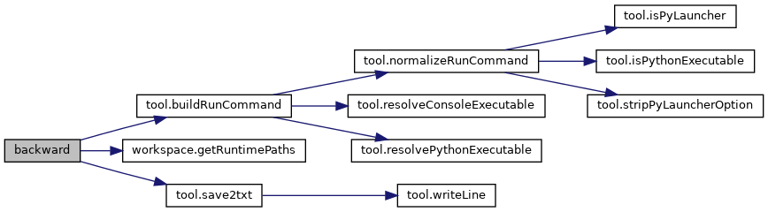
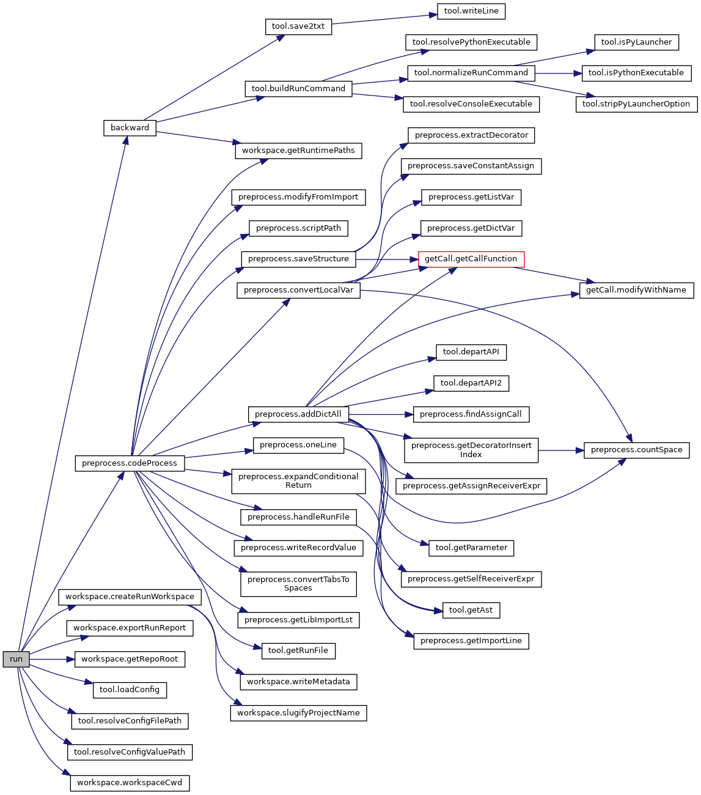
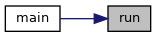

Functions | |
| def | backward (projPath, libName, currentVersion, currentEnv, targetVersion, targetEnv, runCommand, runPath, workspace) |
| Generate pkl files and perform detection and repair tasks 生成项目调用API的pkl文件以及执行检测与修复任务 More... | |
| def | backwardTask (args) |
| One process handles one file 一个进程处理一个文件 More... | |
| def | main () |
| Main function of PCART PCART主函数 More... | |
| def | run (config) |
| Run PCART with an isolated workspace 在隔离工作区中运行PCART. More... | |
Function Documentation
◆ backward()
| def main.backward | ( | projPath, | |
| libName, | |||
| currentVersion, | |||
| currentEnv, | |||
| targetVersion, | |||
| targetEnv, | |||
| runCommand, | |||
| runPath, | |||
| workspace | |||
| ) |
Generate pkl files and perform detection and repair tasks 生成项目调用API的pkl文件以及执行检测与修复任务
- Parameters
-
projPath The path to the project / 项目路径 libName The upgraded Python third-party library name / 升级的第三方库名 currentVersion The upgraded lib's current version / 库的当前版本 currentEnv Current version's virtual environment / 当前版本的虚拟环境 targetVersion The upgraded lib's target version / 库的目标版本 targetEnv Target version's virtual environment / 目标版本的虚拟环境 runCommand The run command of the project / 项目运行命令 runPath The relative path of the run file / 运行文件的相对路径 workspace RunWorkspace object for this execution / 本次执行的运行工作区
Definition at line 165 of file main.py.
165 def backward(projPath,libName,currentVersion,currentEnv,targetVersion,targetEnv,runCommand,runPath,workspace):
219 tasks=[(projName,libName,file,currentVersion,currentEnv,targetVersion,targetEnv,runCommand,runPath,lock,sharedDict,coverSet,runtimePaths) for file in filePath]
def backward(projPath, libName, currentVersion, currentEnv, targetVersion, targetEnv, runCommand, runPath, workspace)
Generate pkl files and perform detection and repair tasks 生成项目调用API的pkl文件以及执行检测与修复任务
Definition: main.py:165
def buildRunCommand(runCommand, envPath)
Build subprocess argv for project run command 为被测项目运行命令构造subprocess argv.
Definition: tool.py:779
def getRuntimePaths(workspace)
Return runtime artifact paths for the current execution 返回当前执行使用的运行产物路径
Definition: workspace.py:207
Here is the call graph for this function:

Here is the caller graph for this function:
◆ backwardTask()
| def main.backwardTask | ( | args | ) |
One process handles one file 一个进程处理一个文件
- Parameters
-
args Input parameters for processing one project file (unpacked tuple of 12 values) args 处理一个项目文件的输入参数（12个值的解包元组）
- Returns
- (ansDict,fileRelativePath,invokedAPINum) ansDict: detection and repair results; fileRelativePath: the file being processed; invokedAPINum: number of invoked APIs
- (ansDict,fileRelativePath,invokedAPINum) ansDict: 检测和修复结果； fileRelativePath: 被处理的文件；invokedAPINum: 调用的API数量
Definition at line 40 of file main.py.
42 projName,libName,file,currentVersion,currentEnv,targetVersion,targetEnv,runCommand,runPath,lock,sharedDict,coverSet,runtimePaths=args
94 currentMatch=mapAPI(callAPI,runCommand,runPath,formatAPI,projName,libName,copyFile,currentVersion,currentEnv,lock,errLst,callKey=callKey,runtimePaths=runtimePaths)
95 targetMatch=mapAPI(callAPI,runCommand,runPath,formatAPI,projName,libName,copyFile,targetVersion,targetEnv,lock,errLst,curr=0,callKey=callKey,runtimePaths=runtimePaths)
100 ansDict[key][f"Definition @{currentVersion} <{currentMatch['matchMethod']}>"]=str(currentMatch['match'])
101 ansDict[key][f"Definition @{targetVersion} <{targetMatch['matchMethod']}>"]=str(targetMatch['match'])
121 apiWithValue=addValueForAPI(callAPI,projName,runPath,runCommand,currentEnv,targetEnv,errLst,callKey=callKey,runtimePaths=runtimePaths) #apiWithValue为空表示添加参数失败
122 fixedAPI,compatibilityLabel,repairStatus=repairTask(root,callAPI,apiWithValue,projName,runPath,runCommand,repairLst,targetEnv,errLst,callKey=callKey,runtimePaths=runtimePaths)
def isCompatible(current, target)
Determine the compatibility of APIs from current and target versions 判断起始版本和目标版本API的兼容性
Definition: changeAnalyze.py:556
def updateSharedDict(callAPI, currentDict, targetDict, sharedDict)
Update API mapping dictionary: add and revise 更新API映射字典: 添加和修改
Definition: changeAnalyze.py:132
def querySharedDict(callAPI, sharedDict)
Query API mapping dictionary 查询API映射字典
Definition: changeAnalyze.py:114
def addValueForAPI(callAPI, projName, runPath, runCommand, currentEnv, targetEnv, errLst, callKey, *runtimePaths)
Add values stored by pkl file for API parameters 为API参数添加保存至pkl文件中的值
Definition: changeAnalyze.py:636
def getCallFunction(filePath, libName, projPath=None)
Extract all API calls from a given .py file 每次传进来一个.py文件，抽取所有的调用API.
Definition: getCall.py:201
def mapAPI(callAPI, runCommand, runPath, formatAPI, projName, libName, copyFile, version, virtualEnv, lock, errLst, curr=1, *callKey, runtimePaths)
Construct the mapping between the invoked API and the lib API to obtain its signature 建立invoked API与 ...
Definition: map.py:328
def repairTask(root, callAPI, apiWithValue, projName, runPath, runCommand, repairLst, virtualEnv, errLst, callKey, *runtimePaths)
Task of repairing parameter compatibility issues 参数兼容性问题修复任务
Definition: repair.py:383
def removeParameter(s, flag=0)
Remove parameter(s) from API call string 去掉API中的参数部分
Definition: tool.py:210
Here is the call graph for this function:

◆ main()
| def main.main | ( | ) |

◆ run()
| def main.run | ( | config | ) |
Run PCART with an isolated workspace 在隔离工作区中运行PCART.
This function keeps old config fields unchanged, creates a RunWorkspace, runs preprocessing and analysis inside the workspace, then exports reports. 该函数保持旧配置字段不变，创建运行工作区，在工作区内完成预处理和分析， 最后导出用户可见报告。
- Parameters
-
config The config file path or config file name under Configure
- Returns
- RunWorkspace object for this execution
Definition at line 237 of file main.py.
242 projPath,runCommand,runPath,libName,currentVersion,targetVersion,currentEnv,targetEnv=loadConfig(configPath)
267 backward(projPath,libName,currentVersion,currentEnv,targetVersion,targetEnv,runCommand,runPath,workspace=workspace)
def codeProcess(projPath, runCommand, runPath, libName, workspace)
Code processing 代码预处理
Definition: preprocess.py:1060
def resolveConfigValuePath(repoRoot, path)
Resolve path value loaded from PCART config 解析PCART配置字段中的路径值
Definition: tool.py:657
def resolveConfigFilePath(config, repoRoot)
Resolve PCART config file path 解析PCART配置文件路径
Definition: tool.py:643
def exportRunReport(workspace)
Export internal report files to user-visible report directory 将工作区内部报告导出到用户可见报告目录
Definition: workspace.py:239
def createRunWorkspace(repoRoot, projPath, runCommand, runPath, libName, currentVersion, targetVersion, currentEnv, targetEnv, commandId='cmd-001', timestamp=None)
Create an isolated workspace for one PCART run command 为一次PCART运行命令创建隔离工作区
Definition: workspace.py:125
Here is the call graph for this function:

Here is the caller graph for this function:
